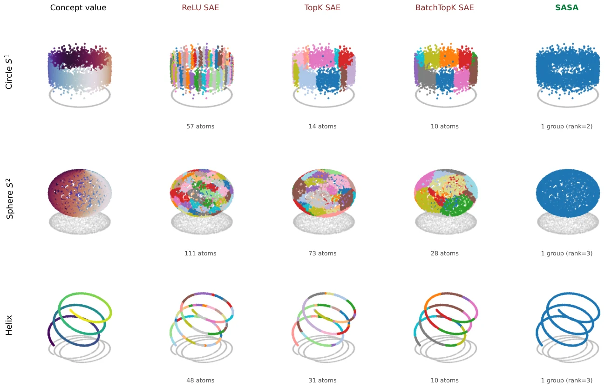
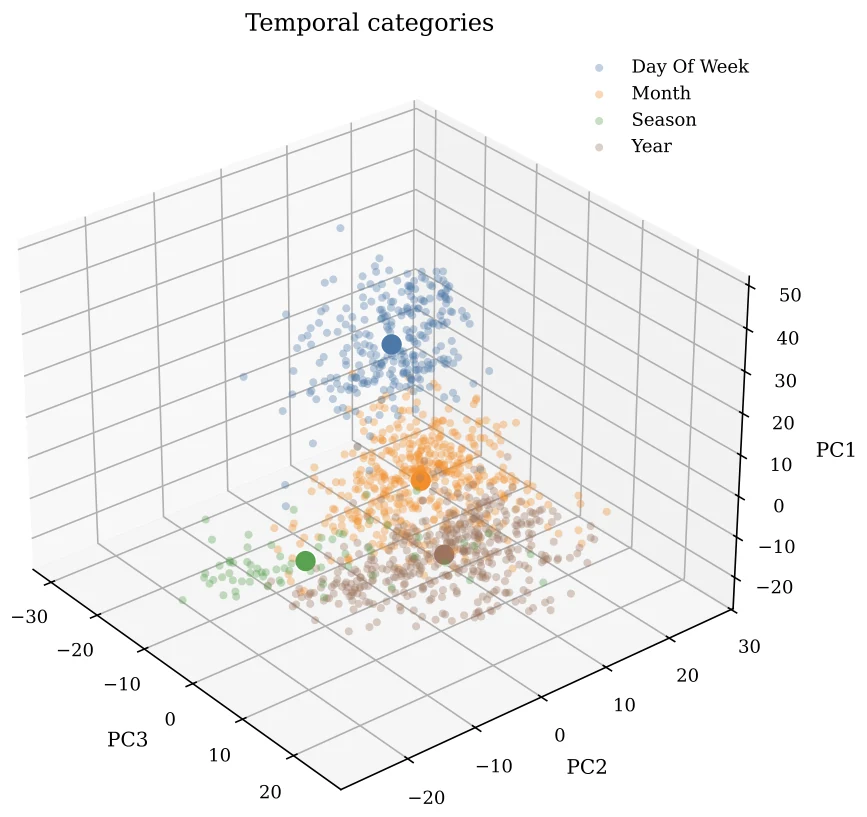
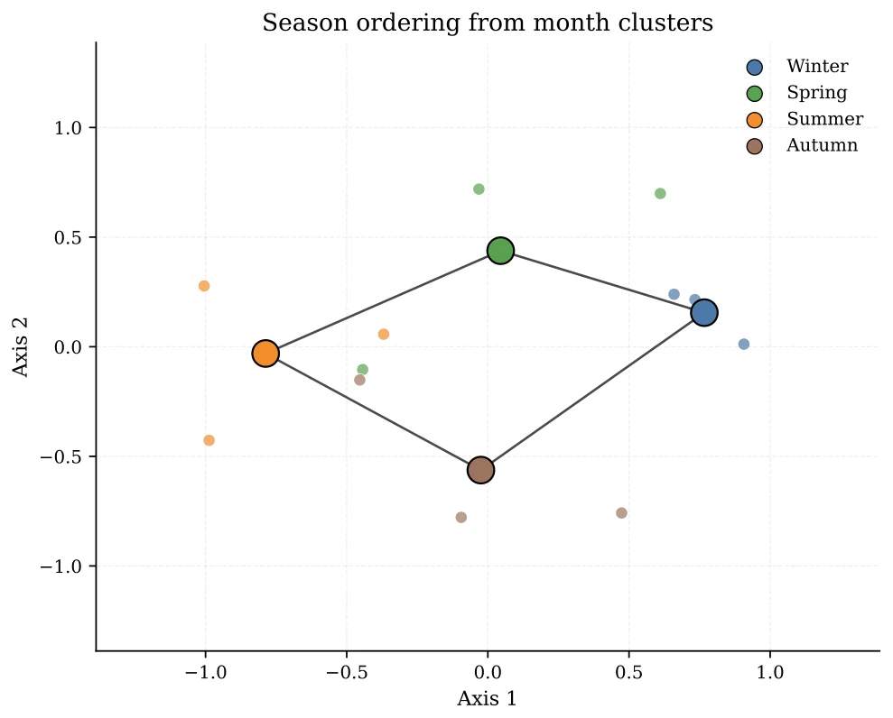
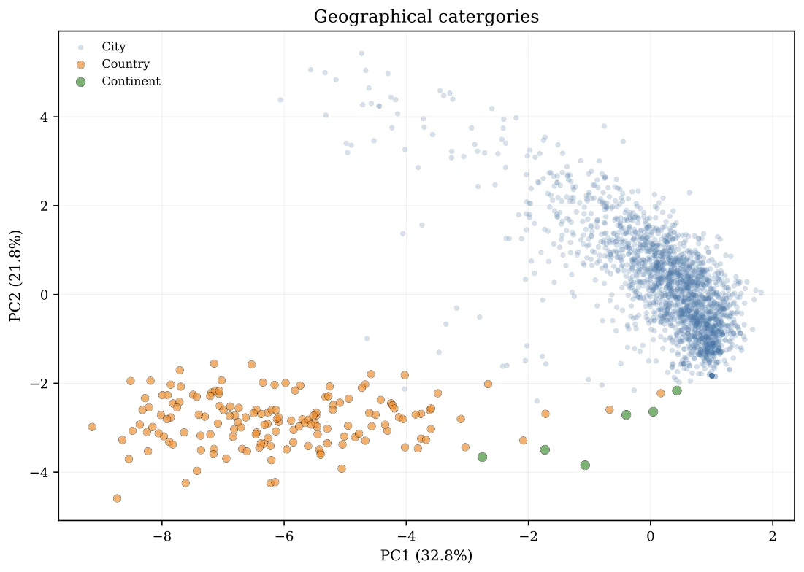
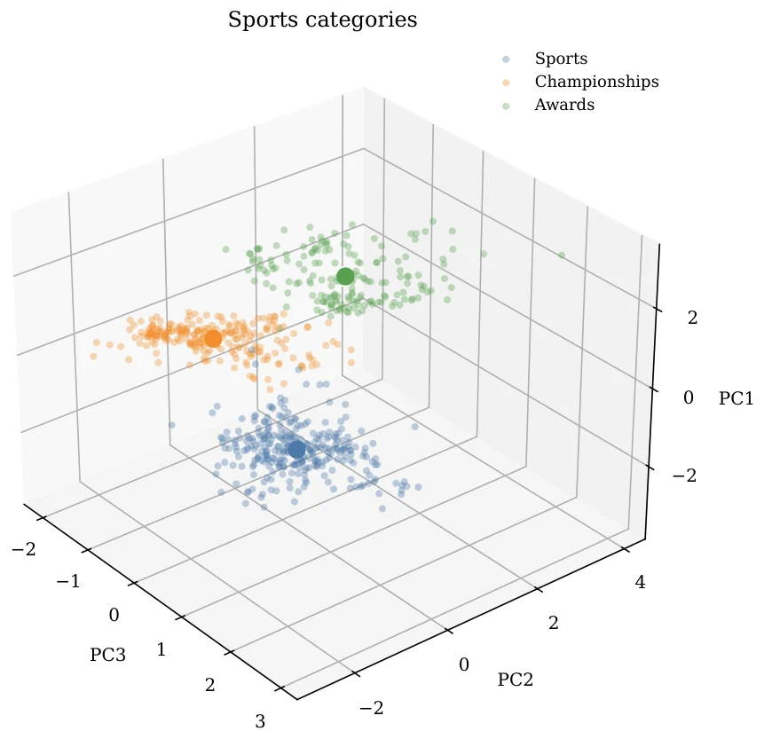
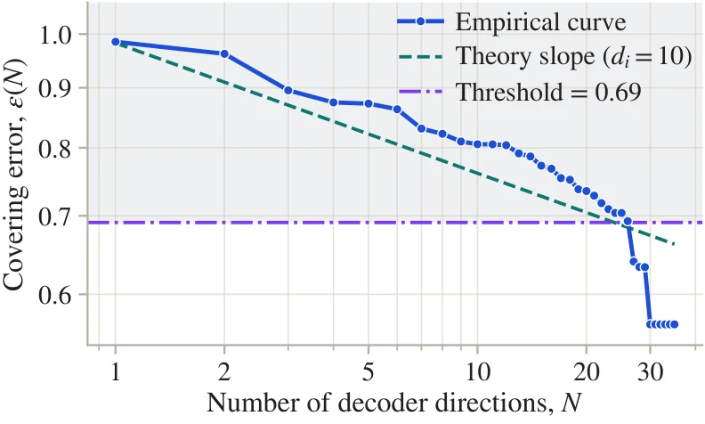
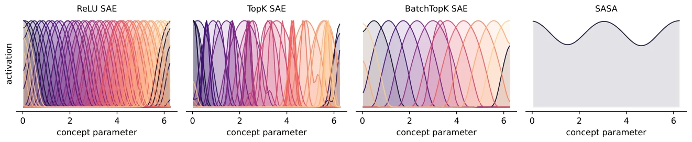
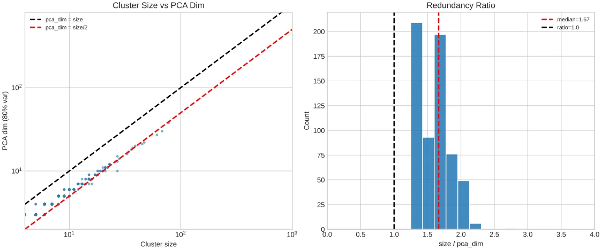
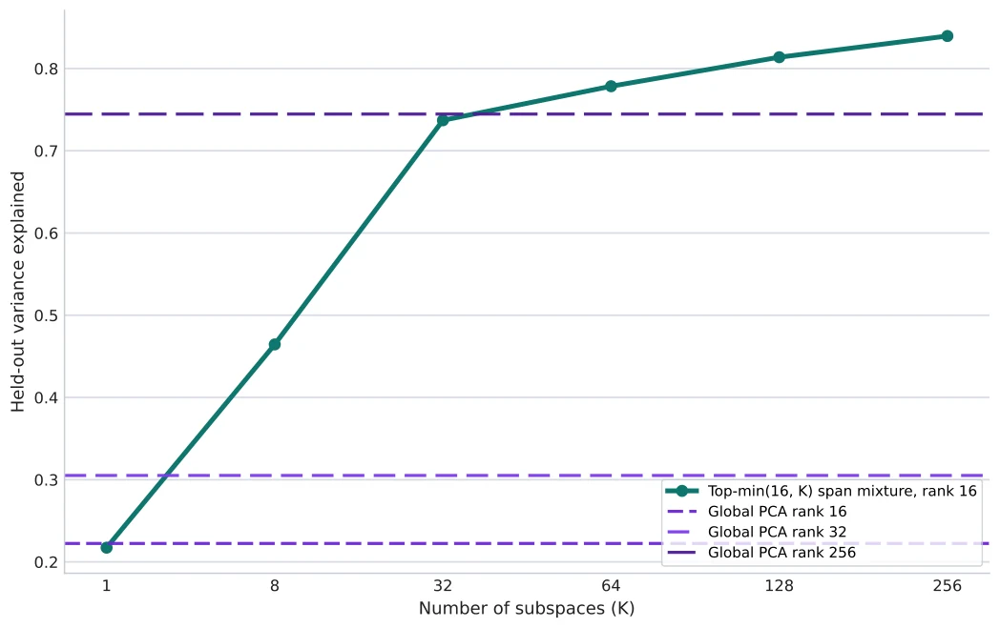

Sparse autoencoders (SAEs) are a standard tool for reading the activations of a language model. An SAE rewrites an activation as a sparse combination of learned directions, and each direction often lines up with a human-readable concept.Towards Monosemanticity (Bricken et al., 2023)
Scaling and evaluating sparse autoencoders (Gao et al., 2024)
The design rests on two hypotheses: that a model packs many sparse features into one layer (superposition), and that each feature is a direction (the linear representation hypothesis).Toy Models of Superposition (Elhage et al., 2022)
The Linear Representation Hypothesis and the Geometry of Large Language Models (Park, Choe and Veitch, 2024)
A known failure is feature splitting: one concept is spread over many near-duplicate latents, each covering part of it, so interpreting the concept means collecting a cluster of latents instead of reading one. This page walks through the paper's account of where splitting comes from, and its fix. SASA (Subspace-Aware Sparse Autoencoders) makes a learned subspace the unit of representation.
Concepts that occupy subspaces
Recent work finds language-model features that are not one direction. Days of the week and months of the year form rings, and moving an activation around the ring changes which day or month the model predicts.Not All Language Model Features Are One-Dimensionally Linear (Engels et al., 2025)
The Origins of Representation Manifolds in Large Language Models (Modell, Rubin-Delanchy and Whiteley, 2025)
Figure 1 shows these rings in layer 8 of Mistral-7B, along with curves for years, temperature, and age. Its bottom row previews the problem this paper studies. In a standard SAE, 12 latents share the months ring, each covering a stretch of it. In SASA, two groups carry most of the months signal, and inside the main one the monthly centroids form a complete ring in calendar order.

The paper models an activation $\bh \in \R^d$ at a fixed layer and token as a sparse sum of low-dimensional features. Feature $i$ has a subspace $\cV_i$ of dimension $d_i$ with orthonormal basis $\bV_i \in \R^{d\times d_i}$, and coordinates $\bz_i \in \R^{d_i}$:
At most $s \ll F$ features are active in any one activation, and different feature subspaces are nearly orthogonal: unit vectors from $\cV_i$ and $\cV_j$ have inner product at most $\mu$. This is the multi-dimensional superposition hypothesis (Hypothesis 1 in the paper). A one-dimensional feature is the special case $d_i = 1$. To study one feature at a time, the analysis looks at its slice $\cM_i(t)$, the feature's possible activations at radius $t$ inside $\cV_i$.Raw GPT-2 activations are low-dimensional on such concepts: 14 principal components explain 90% of the variance on temporal prompts, and 33 on geographical prompts, out of 768 (Appendix C.2).
Why vector SAEs split them
A standard SAE with $m$ latents encodes $\ba(\bh) = \sigma(\bE^\top \bh)$ and decodes $\hat{\bh} = \sum_j a_j(\bh)\, \bd_j$, one unit-norm direction $\bd_j$ per latent. Training minimizes reconstruction error plus an $\ell_1$ penalty:
Suppose an input may use only $k$ of the latents that represent feature $i$ at once. Each input is then reconstructed from the span of $k$ directions. If $k < d_i$, no single choice of $k$ directions spans the whole feature, so the SAE has to tile the slice with many directions, each responsible for one patch. The paper makes this precise with the $k$-sparse covering number $L_i^{(k)}(\varepsilon)$: the fewest unit directions such that every point of the slice lies within $\varepsilon$ of the span of some $k$ of them. A feature splits at budget $k$ when $L_i^{(k)}(\varepsilon) > k$.
Theorem 1 Covering number of a feature subspace
Let $d_i \ge 2$ and suppose the slice contains a cap of $\cV_i$ of angular radius $\rho$ (local richness). For every $1 \le k < d_i$ there is a constant $C = C(d_i, k, \rho) > 0$ such that for all $\varepsilon \in (0,\ t\sin\rho)$,
When $k \ge d_i$, any orthonormal basis of $\cV_i$ reconstructs the slice exactly: $L_i^{(d_i)}(0) = d_i$, with no splitting.
The exponent $(d_i - k)/k$ falls as $k$ grows and the count collapses to $d_i$ once $k$ reaches $d_i$. Figure 2 shows both regimes on a circle and a sphere. With one latent per input, every decoder direction covers two opposite patches, and the number of directions grows like $(t/\varepsilon)^{d_i-1}$. With a budget of $d_i$, a basis covers the slice exactly at every tolerance.
Proposition 1 extends the bound to superposed inputs. With noise $\lVert\bxi\rVert_2 \le \eta$, other active features bounded by $t$, and coherence $\mu(2s-1) < 1$, the same lower bound holds with $\varepsilon$ replaced by $\varepsilon + \eta + \mu s t$, as long as that effective error stays below $t\sin\rho$.
Trained SAEs behave this way on synthetic manifolds with known geometry (Figure 3). Each dictionary has 256 decoder columns, and TopK and BatchTopK keep four latents active, as many columns as the single width-4 group SASA activates. The vector SAEs carve each manifold into local patches, while one SASA group, with effective rank equal to the manifold's dimension, responds across all of it. In published LLM SAEs, clusters of decoder directions are about twice as large as their PCA dimension: the median ratio is 1.67 for Mistral-7B and 2.18 for GPT-2 (Appendix C.3).

The ℓ1 penalty prefers extra directions
The covering bound counts the directions a dictionary needs. It does not say which dictionary training prefers. Section 3.2 of the paper studies that question through the population risk of a decoder $\bD$ with optimal codes, taking the slice to be the whole radius-$t$ sphere in $\cV_i$:
Every SAE that uses decoder $\bD$, whatever its encoder, has loss at least $R(\bD)$. Start from the basis decoder $\Dbasis = [\bv_1, \dots, \bv_{d_i}]$, which already spans the feature. Its optimal code soft-thresholds each coordinate, $a_k^\star = \operatorname{sign}(u_k)(t\lvert u_k\rvert - \lambda)_+$ for $\bh = t\bu$. On the set $\cA$ where every coordinate clears the threshold, this leaves a residual of fixed length $\lambda\sqrt{d_i}$:
An added unit direction $\dt$ stays unused only if $\lvert \dt^\top \br(\bh)\rvert \le \lambda$, the inactivity certificate. Otherwise a small coefficient on $\dt$ removes more reconstruction error than it costs in $\ell_1$.
Theorem 2 Dual certificate violation
Let $d_i \ge 2$ and $\lambda \in (0, t/\sqrt{d_i})$. Take any unit $\dt$ in the span of the basis with coordinates $\bc$, other than $\pm\bv_k$. On the positive-measure set $\cU_{\bc}$ of inputs in $\cA$ whose coordinate signs match those of $\bc$,
Proposition 2 A strict decrease in risk
With $\bD = [\Dbasis,\ \dt]$,
Figure 4 runs this argument on a two-dimensional slice with exact codes. Drag the input $\bh$ around the circle and the added direction $\dt$ around the origin. The green arcs mark every input whose optimal loss drops when $\dt$ joins the dictionary.
The decrease happens without enlarging the span of the decoder, so the $\ell_1$ objective itself favors non-basis directions over the basis alone. At a fixed width, Theorem 5 (Appendix E) shows that a basis padded with duplicate columns is not a local minimizer: an arbitrarily small rotation of one duplicate lowers the risk. These results concern the $\ell_1$ risk with optimal codes; they do not claim that TopK training must end in a fragmented dictionary.Related observations: Bhalla et al. (2026) give conditions under which an idealized sparse decoder captures a compact manifold, yet find fragmentation (“dilution”) in trained LLM SAEs. Michaud, Gorton and McGrath (2025) show that SAEs can spend many latents on one feature manifold.
SASA: one subspace per feature
SASA keeps the shape of an SAE but groups its $m = Kr$ latents into $K$ groups of width $r$. Group $k$ has an encoder block $\bE_k \in \R^{r\times d}$, pre-activation $\bp_k(\bh) = \bE_k\bh \in \R^r$, and a decoder block $\bD_k \in \R^{d\times r}$. A Top-$s$ gate keeps the $s$ groups with the largest norms, and each kept group passes its whole code:
Training minimizes reconstruction error plus a nuclear-norm penalty on each group's reconstruction map $\bW_k = \bD_k\bE_k$:
Two choices do the work. The gate ranks groups by one scalar each and charges nothing for using several coordinates inside a group, so it removes the coordinatewise incentive of the previous section. The nuclear norm equals the smallest weight decay $\tfrac12(\lVert\bD_k\rVert_F^2 + \lVert\bE_k\rVert_F^2)$ over factorizations of $\bW_k$, and it shrinks the singular values of each group so that its effective rank adapts to the dimension of the feature it carries.The variational form is from Kunin et al. (2019). In a batch the penalty is computed as $\operatorname{tr}\big((\bW_k^\top\bW_k)^{1/2}\big)$. Figure 5 compares the two gates at the same budget of decoder columns and active coordinates.
Algorithm 1 SASA training step
Input: a minibatch of activations $\{\bh^{(j)}\}_{j=1}^{B}$; hyperparameters $s$, $s_{\mathrm{aux}}$, $\lambda_{\mathrm{aux}}$, $\lambda_{\dim}$.
- Rescale every decoder column to unit norm.
- For each $\bh$, compute every group's pre-activation $\bp_k(\bh) = \bE_k\bh$.
- Keep the $s$ groups with the largest $\lVert\bp_k(\bh)\rVert_2$; set the other codes to $\mathbf{0}$.
- If some coordinates have been dead for a while, fit the residual $\br = \bh - \bD\ba(\bh)$, held fixed, with the $s_{\mathrm{aux}}$ largest dead pre-activations: $\mathcal{L}_{\mathrm{aux}} = \lVert \br - \bD\tilde{\ba}(\bh)\rVert_2^2$.
- Minimize $\frac1B\sum_j \big(\lVert\bh^{(j)} - \bD\ba(\bh^{(j)})\rVert_2^2 + \lambda_{\mathrm{aux}}\mathcal{L}_{\mathrm{aux}}\big) + \lambda_{\dim}\sum_k \lVert\bD_k\bE_k\rVert_*$.
At inference
Apply the same gate. A group's intensity on an input is the norm of its code, $\lVert\ba_k(\bh)\rVert_2$; the code itself says where on the feature the input lies.
The auxiliary loss on dead coordinates follows TopK SAEs, as a stabilizer.Training settings: inputs layer-normalized; Adam with learning rate $4\times10^{-4}$ (GPT-2) or $2\times10^{-4}$ (Mistral-7B), 4,096 tokens per batch, 1,000 warm-up steps, and linear decay over the last fifth of training. $(K, r, s) = (4096, 6, 20)$ for GPT-2 and $(4096, 8, 10)$ for Mistral-7B.
One group recovers the feature
A group of width $r \ge d_i$ can hold the whole feature: with $\bD_k = [\bV_i\ \mathbf{0}]$ and $\bE_k = [\bV_i\ \mathbf{0}]^\top$, the Top-1 gate routes the entire slice to that group and reconstructs it exactly (Proposition 3). The harder question is whether the objective prefers that representation over splitting the slice across groups. With the Top-1 gate, splitting means routing different parts of the slice to different groups.
Theorem 3 Block recovery on the slice
Let $d_i \ge 2$, block size $r \ge d_i$, Top-$s$ gating with $s = 1$, and $0 < \lambda_{\dim} < t^2/d_i$, with inputs uniform on the radius-$t$ sphere in $\cV_i$. Then every global minimizer of the SASA population objective activates a single block $k^\star$ almost surely, with $\operatorname{col}(\bW_{k^\star}) = \cV_i$. The active reconstruction map is unique up to the index $k^\star$, and if $r = d_i$ its decoder columns span $\cV_i$.
The proof tracks each block's share of the second moment, $\bM_k = \E[\bh\bh^\top \mathbb{1}\{\bh \text{ routed to } k\}]$. Routing only redistributes a fixed total, $\sum_k \bM_k = \bSigma_i = \tfrac{t^2}{d_i}\bP_{\cV_i}$. Any block that receives part of the slice sees variation along all $d_i$ directions, so if the slice is split, each $\bM_k$ has spectral norm strictly below $t^2/d_i$, and the nuclear-norm bound in the proof leaves a strictly positive gap. The minimum value, $d_i\lambda_{\dim} - d_i^2\lambda_{\dim}^2/(4t^2)$, is reached only by one block with $\bW_{k^\star} = \big(1 - \tfrac{\lambda_{\dim}d_i}{2t^2}\big)\bP_{\cV_i}$.
Figure 6 puts the two objectives side by side on the same circle. For the standard SAE, the population risk keeps falling as directions inside the span are added to the basis. For SASA, the lowest objective any blocks can reach rises as the circle is split across more blocks.
For superposed inputs, several groups must be selected from the same activation. With a known dictionary of orthonormal blocks, $s < \tfrac12(1 + 1/\mu)$ is enough for block orthogonal matching pursuit to recover the active blocks exactly from noiseless inputs.Compressed Sensing of Block-Sparse Signals: Uncertainty Relations and Efficient Recovery (Eldar, Kuppinger and Bölcskei, 2010) SASA replaces that search with a learned encoder and the norm gate; proving that this amortized gate selects the right blocks is outside the paper's scope.
Splitting also costs data
Every SAE training example is an LLM forward pass. On Mistral-7B, producing layer-8 activations for one million tokens takes about 25 times as long as the SASA forward and backward passes on them (Figure 7), so the number of activations an autoencoder needs is a direct cost.
A splitting dictionary needs data for every atom. Proposition 4 treats a fixed dictionary of $N$ directions with one active per input as a coupon collector. Seeing every atom at least once with probability $1-\delta$ needs
samples. Estimating the feature's subspace directly is polynomial in $d_i$ (Theorem 4): the top $d_i$ eigenvectors of the empirical second moment come within $\varepsilon$ of every point of the slice, with probability at least $1-\delta$, once
With $k = 1$, Theorem 1 asks for $N \ge C(t/\varepsilon)^{d_i - 1}$ atoms, so observing all of them takes $\Omega(N\log N)$ samples. Under the single-feature assumptions, estimating the subspace can therefore take fewer activations, and fewer LLM forward passes, than populating a split dictionary.
Results on GPT-2 and Mistral-7B
SASA is trained on residual-stream activations of GPT-2 Small (layer 7, $d = 768$, OpenWebText) and Mistral-7B (layer 8, $d = 4096$, Pile). The main GPT-2 comparison holds everything fixed but the architecture: 24,576 decoder columns, 300M training tokens, the same optimizer and schedule, and target sparsity $\ell_0 = 120$ scalar coordinates per token. SASA uses $K = 4096$ groups of width $r = 6$ with $s = 20$ active. The baselines are TopK, BatchTopK, and Matryoshka SAEs.TopK (Gao et al., 2024)
BatchTopK (Bussmann, Leask and Nanda, 2024)
Matryoshka SAEs (Bussmann et al., 2025)
- CE score measures reconstruction through the model: next-token cross-entropy after replacing activations with their reconstructions, scaled from 0% (zero ablation) to 100% (original activations).
- Absorption measures how often a feature's main latents stay weak or silent while other latents carry it. The first-letter benchmark asks which latents encode a word's first letter.A is for Absorption (Chanin et al., 2025). Mean absorption measures how much other latents contribute when the main latents fall short; full absorption counts the cases where all main latents are off and another latent explains much of the feature. The paper extends it to ten concept families: weekdays, months, countries, US cities, numbers, colors, directions, seasons, languages, and animals. For families, a SASA group is scored as one unit.
- Member prediction asks whether the units chosen to detect a family also tell its members apart, such as which weekday is mentioned, using one width-6 group or up to six SAE latents.
- AutoInterp asks an LLM to explain a unit from activating examples and then predict which held-out contexts activate it.SAEBench (Karvonen et al., 2025), with its default protocol and a gpt-4o-mini judge on 1,000 units.
The AutoInterp gap has a plausible cause. A SASA group combines several related values of a concept, so a single description may capture its activity less well; lower absorption need not raise this score. Across sparsity levels and dictionary widths (Figure 9), SASA has the lowest mean family absorption in every tested setting. First-letter absorption depends more on the setting: at $\ell_0 = 60$ with 24,576 columns, BatchTopK is lower (9.1% against 10.7%), while SASA is lowest at $\ell_0 = 120$ and $240$.
The reconstruction cost is largest at low sparsity. Figure 10 plots each model's CE score against its family absorption and member prediction on the 12,288-column sweep, where SASA's CE score ranges from 95.8% at $\ell_0 = 30$ to 99.3% at $\ell_0 = 240$.
Member prediction improves further with a larger budget of decoder columns (Figure 11). In the main 24,576-column comparison, raising the budget from 6 to 24 columns lifts SASA from 86.2% to 94.8% and BatchTopK, the best vector SAE, from 68.9% to 86.7%.
On Mistral-7B, SASA is compared with the published ReLU SAE of Engels et al. Figure 12 shows absorption. SASA uses half the dictionary width (32,768 columns, against 65,536), half the training tokens (500M, against 1B), and fewer active coordinates ($\ell_0 = 80$, against 285). It also reconstructs better here: CE score 95.1% against 94.1%, KL score 95.3% against 93.2%, and explained variance 98.6% against 96.7%.The same comparison on GPT-2 with Bloom's published ReLU SAE (24,576 columns, 300M tokens) and a SASA with 12,288 columns and 150M tokens, both at $\ell_0 = 60$: CE score 97.1% against 98.0%, KL score 97.0% against 98.0%, explained variance 98.8% against 99.1% (Tables 3 and 4).
Inside a group
A SASA group should respond to a whole concept and keep the concept's values apart inside its code. Figure 13 shows two groups on fixed prompts: GPT-2 Group 1473, selected for temporal terms, and Mistral-7B Group 1570, selected for places. The height of each bar and the shade of each token give the group's norm at that token.
The OpenWebText contexts where Group 1473 is most active all fall on weekday names:
Inside the group, the code keeps related values apart. Projecting Group 1473's six-dimensional codes with PCA separates weekdays, months, seasons, and years, and a supervised linear projection that maps the monthly centroids toward a circle in calendar order gives the season view below. Mistral Group 1570 separates cities from countries, and GPT-2 Group 1711, which AutoInterp labels “titles and awards related to sports and competitions”, separates sports, championships, and awards.




Groups also stay distinct from each other. Among the 500 most active groups of a 12,288-column GPT-2 SASA, the largest cosine between the principal directions of two groups has median 0.131, and only 0.16% of pairs exceed 0.5.
Steering with a group
If a group carries a concept, editing the hidden state inside the group's decoder span should change what the model says about that concept. The paper tests this on Mistral-7B with prompts that repeat a sentence and stop just before a month or weekday name. For each concept, it selects the group whose pre-activation norm best separates the concept's names from other tokens (by AUROC), and measures the total next-token probability of the concept's names.
- Removal. Project the hidden state at the earlier name off the selected group's 8-dimensional decoder span.
- Addition. Replace the earlier name with an unrelated noun, then add $\alpha\,\bv_k$ at that position, where $\bv_k$ is the group's mean decoded vector at month or weekday names in four held-out templates.
Controls use the second-best group for the same concept, the group for the other concept, and random subspaces or vectors of the same size, so each comparison holds the size of the intervention fixed.
Ablations
Feature dimension. On synthetic activations that superpose 4 of 256 features with known subspaces of dimension 1 to 16, the paper counts how many TopK atoms carry 90% of each feature's projected contribution, and how many SASA groups capture 90% of its subspace (Figure 19). Halving the scalar budget from $\ell_0 = 64$ to 32 leaves the count near 8 atoms for $d_i = 4$ but sends it from 31.8 to 646.8 atoms for $d_i = 16$, and explained variance in that subspace falls from 92.6% to 47.1%. SASA covers the 16-dimensional features with 1.2 groups of width 16 or 2.1 groups of width 8, close to the minimum of 1 and 2.
Rank adaptation. With features of dimension 1 to 8 and groups of width 10, the nuclear-norm penalty lowers the effective rank of groups matched to one-dimensional features from 7.1 to 4.2, while groups matched to eight-dimensional features keep a rank of 7.9 (Figure 20). Explained variance drops slightly, from 98.3% to 97.2%.
Group width. At a fixed scalar budget, wider groups mean fewer active groups, since $s = \ell_0/r$. In the main GPT-2 setup, narrowing groups from $r = 6$ to $r = 2$ raises mean first-letter absorption from 11.3% to 13.9% and mean family absorption from 23.9% to 43.4%. The effect on first letters depends on the budget: in the 12,288-column grid below, at $\ell_0 = 30$, the same change allows 15 active groups instead of 5 and lowers first-letter absorption from 14.9% to 7.7%, while family absorption rises from 7.9% to 19.3%.
| Width $r$ | Mean family absorption (%) ↓ | Mean first-letter absorption (%) ↓ | CE score (%) ↑ | |||||||||
|---|---|---|---|---|---|---|---|---|---|---|---|---|
| 30 | 60 | 120 | 240 | 30 | 60 | 120 | 240 | 30 | 60 | 120 | 240 | |
| 2 | 19.3 | 29.2 | 51.4 | 78.9 | 7.7 | 15.4 | 12.3 | 17.8 | 96.8 | 98.2 | 99.0 | 99.6 |
| 4 | – | 28.1 | 36.0 | 57.4 | – | 11.6 | 14.7 | 16.9 | – | 97.6 | 98.8 | 99.4 |
| 6 | 7.9 | 5.5 | 25.5 | 36.6 | 14.9 | 15.9 | 15.1 | 14.8 | 95.8 | 97.3 | 98.5 | 99.3 |
| 8 | – | – | 5.1 | 50.5 | – | – | 13.2 | 15.6 | – | – | 98.4 | 99.3 |
Column headings under each metric give the target $\ell_0$. Width 6 is the main setting.
More figures from the paper

The paper's Figure 11. Feature splitting as a covering problem in GPT-2. For each temporal component reconstructed by an SAE, the best single one of $N$ temporal decoder vectors is chosen and scaled. The largest relative error (blue) falls slowly with $N$; the dashed line is the $k = 1$ scaling of Theorem 1 with $\mathrm{dim90} = 10$.

The paper's Figure 5a. Activation profiles on the synthetic circle. The vector SAEs respond locally; one SASA group responds across the whole concept.

The paper's Figure 8. Mistral-7B SAE decoder clusters: cluster size against the PCA dimension that explains 80% of the within-cluster variance. The median ratio is 1.67 (2.18 for GPT-2, Figure 9).

The paper's Figure 7. A mixture of rank-16 local subspaces at 256 clusters captures 84.0% of held-out variance in raw GPT-2 activations, against 74.5% for global PCA at rank 256.
Limitations
- The covering bound assumes a per-feature co-activation budget below the feature's dimension.
- The $\ell_1$ analysis uses optimal codes. It shows what that objective prefers, not that TopK training must converge to a fragmented dictionary.
- The recovery theorem concerns population optima for a single feature sampled uniformly from a sphere, and the sample-complexity bound concerns estimating that feature's subspace. Extending them to learned routing of noisy superpositions and to practical training objectives is future work.
- SASA gives up some reconstruction: on GPT-2 its CE score is 98.7% against 99.6–99.7% for the vector baselines at $\ell_0 = 120$. Its AutoInterp score is also lower.
- A learned subspace does not come with interpretable coordinates. Reading the inside of a group still relies on manual inspection, and the authors aim to recover meaningful coordinates and use them for steering.
Citation
@inproceedings{dalili2026sasa,
title = {Subspace-Aware Sparse Autoencoders for Effective Mechanistic Interpretability},
author = {Dalili, Seyed Arshan and Mahdavi, Mehrdad},
booktitle = {Advances in Neural Information Processing Systems},
year = {2026},
url = {https://arxiv.org/abs/2606.06333}
}